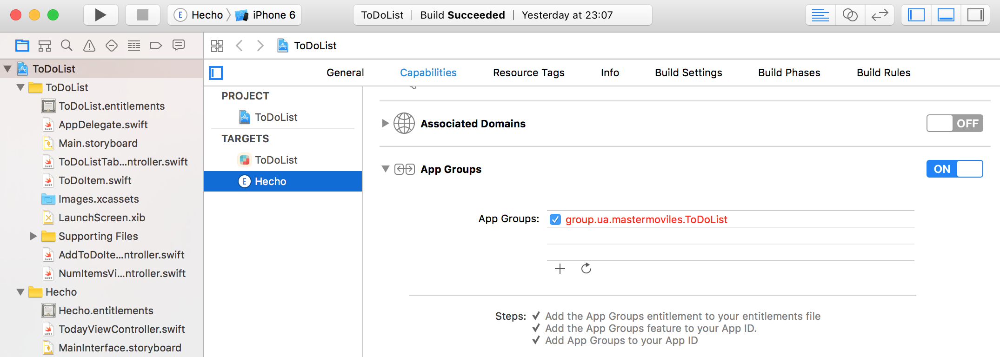

Sesión 5:
Extensiones¶
Servicios de las plataformas móviles - iOS
Domingo Gallardo - domingo.gallardo@ua.es
Departamento Ciencia de la Computación e Inteligencia Artificial
Master Programación de Dispositivos Móviles
2017-18
Introducción¶
- Las app extensions representan pequeñas apps o pequeños hilos de ejecución que se instalan en puntos de extensión del sistema y de otras apps.
- Se distribuyen e instalan junto con apps normales (la app contenedora de la extensión), no de forma independiente (con la excepción de los teclados configurables). Por ejemplo, Pocket distribuye una extensión para guardar contenido en la app cuando el usuario pulsa el botón de compartir estando en una página web.
- Pueden llegar a ser importantes para el usuario final, proporcionando integración entre apps y aumentando la experiencia de usuario.
- En nuestras apps podemos también declarar puntos de extensión a los que se conectarán extensiones de terceros (compartir, por ejemplo).
Ejemplo de extensión: Panel de Hoy (Widgets)¶

- Las apps pueden instalar extensiones en el panel de Hoy.
- Estas extensiones tienen una pequeña vista que se muestran una sobre otra.
- Las extensiones pueden tener dos vistas: una estándar y otra ampliada (que se muestra al pulsar Mostrar más)
- El usuario puede configurar el orden en que aparecen las extensiones y activarlas o esconderlas.
Ejemplo de extensión: Compartir¶


Tipos de extensiones¶

- Tipos de extensiones:
- Today
- Share
- Actions
- Custom Keyboard
- Photo Editing
- File Provider
- Document Provider
- Audio
- Finder Sync
Puntos de extensión¶
- Cada uno de los tipos de extensiones anteriores se conectan con puntos de extensión del sistema.
- Cada punto de extensión define una política de uso y proporciona APIs que se usan en las extensiones de ese tipo.
- Cada punto de extensión permite una funcionalidad distinta. Cuando diseñemos una extensión hay que identificar qué funcionalidad queremos ofrecer y qué punto de extensión debemos usar.
- Se puede consultar la lista completa de puntos de extensión en la documentación de Apple.
Algunos puntos de extensión¶
- Action:
- Manipular o ver contenido que se origina en una app anfitriona.
- Document Provider:
- Proporcionar acceso a y manejar un repositorio de ficheros.
- Intents:
- Manejar tareas relacionadas con la integración con Siri.
- Photo Editing:
- Editar una foto o vídeo dentro de la app Fotos.
- Share:
- Enviar a una website o compartir contenido con otros.
- WatchKit App:
- Proporcionar una app o una notificación UI para el Apple Watch.
Ciclo de vida de una app extension¶

- Las app extensión tienen un ciclo de vida muy corto.
- Se inicia cuando el usuario la elige de la IU de la app anfitriona.
- La app anfitriona define el contexto proporcionado a la extensión y comienza el ciclo de vida de la extensión, lanzándole una petición en respuesta a una acción del usuario.
- La extensión termina tan pronto como completa la petición que ha recibido de la app anfitriona.
- Ejemplo: el usuario escribe un texto, lo selecciona y pulsa el botón compartir para enviarlo a una red social.
Comunicación de la app extension¶

- Una app extension se comunica principalmente con su app anfitriona.
- No hay comunicación directa entre la extensión y la app contenedora. La app contenedora ni siquiera estará ejecutándose cuando la extensión esté corriendo.
- El sistema abre la app extension en respuesta a la app anfitriona y la extensión toma sus datos de un contexto proporcionado por esta app.
- Una extensión de tipo
Today(y ninguna otra) puede pedir al sistema que abra la app contenedora. - La extensión y su app contenedora pueden comunicarse a través de datos compartidos en un contenedor compartido.
Creación de extensiones dentro de apps¶
- Las extensiones se crean en Xcode seleccionando el proyecto y la opción Editor > Add Target...
- Hay plantillas para todos los tipos de extensiones que proporcionan un punto de partida a partir del que desarrollar nuestra extensión.
Se construyen de forma independiente¶
- Las extensiones se compilan de forma independiente de la app.
- Tienen su propio bundle id, capabilities, perfil de aprovisionamiento, etc.
- En el caso de la práctica, el bundle id de la extensión será:
es.ua.mastermoviles.ToDoListCloudKit.Hecho. - Para poder depurarlas o que aparezca su salida en el panel de salida estándar de Xcode hay que seleccionarla como producto a lanzar en el simulador.
Notification Service Extension¶
- La
Notification Service Extensiones una extensión que permite modificar el contenido de una notificación remota que llega al dispositivo, antes de ser mostrada. - Hay que seleccionar el tipo en Xcode y se añade un nuevo target a la aplicación.
- El nuevo target contiene una subclase de la clase
UNNotificationServiceExtensionque se debe modificar. - Se debe usar el método
didReceiveNotificationRequest:withContentHandler:para crear un nuevo objetoUNMutableNotificationContenten el que se pueden realizar los cambios que se deseen, reemplazando algunos o todos de los valores originales. - Cuando se haya terminado, se debe llamar al manejador proporcionado pasándole el nuevo objeto. El sistema integra el nuevo contenido en la notificación y la entrega al usuario.
Contenedores de la app y la extensión¶

- La app y la extensión se ejecutan en diferentes procesos y también en diferentes contenedores.
- Es posible compartir código usando frameworks embebidos compartidos
- Es posible compartir datos usando grupos de apps, CoreData o sqlite.
Framework embebido para compartir código¶

- Un framework embebido permite compartir código entre la extensión y la app contenedora.
- Por ejemplo, si se desarrolla código para realizar un filtro de una foto es conveniente poner el código en un framework y embeber ese framework tanto en la extensión como en su app contenedora.
- Para crear un framework embebido se debe seleccionar "Frameworks" como destino en la fase de construcción Copy Files.
Grupos de apps¶
- Los grupos de apps permiten que distintas apps y extensiones de
un mismo desarrollador puedan acceder a recursos compartidas entre
todas ellas, como:
- UserDefaults compartido
- Ficheros compartidos
- Un grupo de app se define con un identificador y se crea en el centro de desarrolladores.
- Todas las apps y extensiones deben usar ese mismo identificador en su App Id (configurado en el centro de desarrolladoras) y en sus capabilities (en Xcode).
Configuración del grupo de apps¶

- Hay que crear un grupo de app en el centro de desarrolladores (dando el identificador) e incluir ese grupo en el App Id que usaremos en la app y en la extensión.
- Creamos para la práctica el grupo
group.ua.mastermoviles.ToDoList
App IDs y perfiles de aprovisionamiento¶


- Añadimos el identificador de grupo en los App IDs y actualizamos el perfil de aprovisionamiento.
- App IDs:
ToDoList CloudKitToDoList Today Extension
- Perfiles de aprovisionamiento:
ToDoListCloudKit ProfileToDoList Today Extension
Capabilities¶

- Tanto en la extensión como en la app hay que activar la capability App Groups y escribir el identificador del grupo que hemos definido.
Compartir datos con UserDefaults¶
- La clase UserDefaults define un diccionario compartido en el que se puede guardar valores asociados a claves.
1 2 3 4 5 6 7 8 9 10 11 | let compartido = UserDefaults(suiteName: "group.app.group.id") // set valores compartido?.set(1, forKey: "contador") compartido?.synchronize() // get valores compartido?.synchronize (); let contador = compartido?.integer(forKey: "contador") |
Compartir datos con FileManager¶
- La clase
FileManagercontiene el métodocontainerURLal que se le debe pasar el identificador del grupo de apps y que devuelve una URL con la localización del directorio compartido del grupo en el sistema de ficheros. - Es posible crear ficheros compartidos con todas las apps del grupo en este directorio.
1 2 3 4 5 6 | let fileManager = FileManager.default if let containerURL = fileManager. containerURL(forSecurityApplicationGroupIdentifier: "group.com.company.project") { ... } |
Demo: Crypticker¶
- Se puede descargar desde este enlace, está incluida en el tutorial de raywenderlich.com
- 3 productos: app, today extension y framework.
- No hay comunicación entre la extensión y la app, pero sí código compartido: el dibujo de la gráfica se realiza con un framework embebido.
- Examinar cómo funcionan la app y la extensión.
Práctica: ToDoList¶
- Implementar una extensión Today en la app ToDoList.
- En la pantalla principal de la extensión debe aparecer el número de ítems completados y el último.
- Para comunicar los datos entre la app y la extensión debes usar el
UserDefaultscompartido en el grupo de apps. - Puedes consultar los nombres del grupo de apps y de los bundle identifiers asociados a los App Ids en el member center de la UA.
Referencias¶
- Página de principal de Apple: App Extensions
- App Extensions Programming Guide
- Tutorial Raywenderlich sobre extensiones Today (Crypticker)